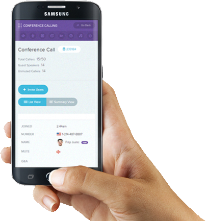

Conference Call Service
Use integrated conference calls during online mettings or use the
stad-alone conference call service by itself.
Integrated
Attendees joinby phoneu using Web Metting integrated conference call services. dial-in using unlimited toll or choose from toll-free and international numbers in over 70 countries.
Stand-Alone
Conference calling as a stand-alone service is always in high demand. You can run a regular conference call using your dedicated numbers without Web Metting or computer at all.
